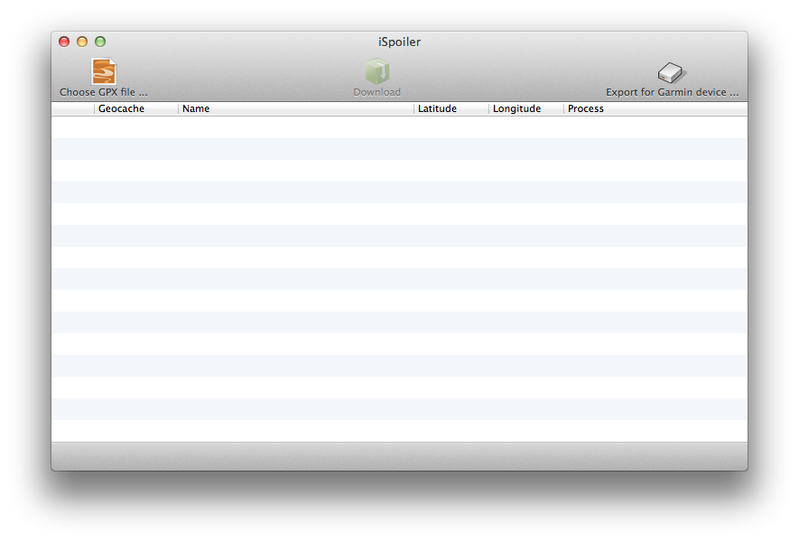

iSpoiler Help
iSpoiler helps you to download the geocache's images and spoilers from a pocket query or simple gpx file.
The main mainwindow
The software uses 3 buttons :
- Process GPX File : Choose one GPX file containing one or more geocaches.
- Download : Launch the download process. It creates a iSpoilerSync directory at the path choosed in preferences.
- Export for Garmin device : export downloaded pictures from the iSpoilerSync directory in a choosen directory. It will create a structured GeocachePhotos directory compatible with a Garmin device. You just have to copy this folder in the Garmin's memory.

Getting Support